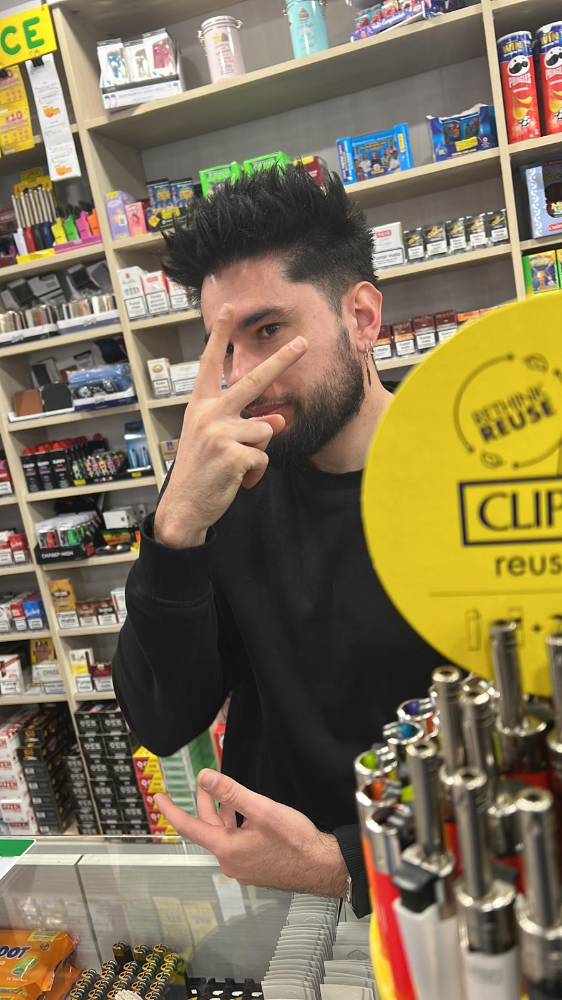
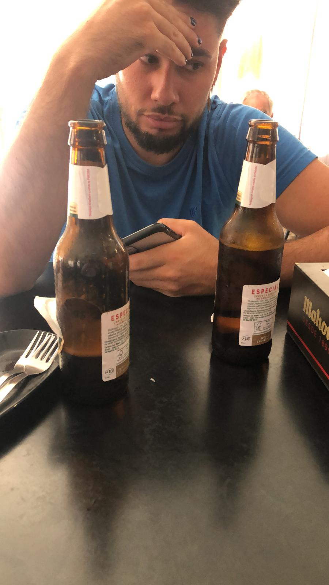

Curriculum Vitae
Nombre: Barroso
Tlf: Solo contesto Insta
Sexo: Mucho
Redes Sociales: @Barroso
Experiencia
Cuando la Nancy me dijo que si quería otra copa y le dije: “Ponme dos.”
Cuando me pusieron un apercibimiento en el trabajo y le dije a mi jefe: “Ponme dos.”

Me aposté con el Ale que me invitaba a dos cervezas si le decía al camarero:
“Ponme tres cervezas, una pa ti, otra pa mí y otra pa tu puta madre.”
Me miró con mala leche pero las dos cervezas me las bebí
(le pasé foto a Samu de la hazaña).
Intenté lo mismo otro día... pero el camarero me dio una ostia.

Aprendí la lección y decidí dejar el alcohol. Le dije al camarero:
“Hoy solo quiero 2 cafés. Uno pa mí y otro pa tu puta madre.
Pa ti no que te pones mu nervioso”
Vida sana sanita.
Ese día no me apetecía café, así que me dije: “Un día es un día.”